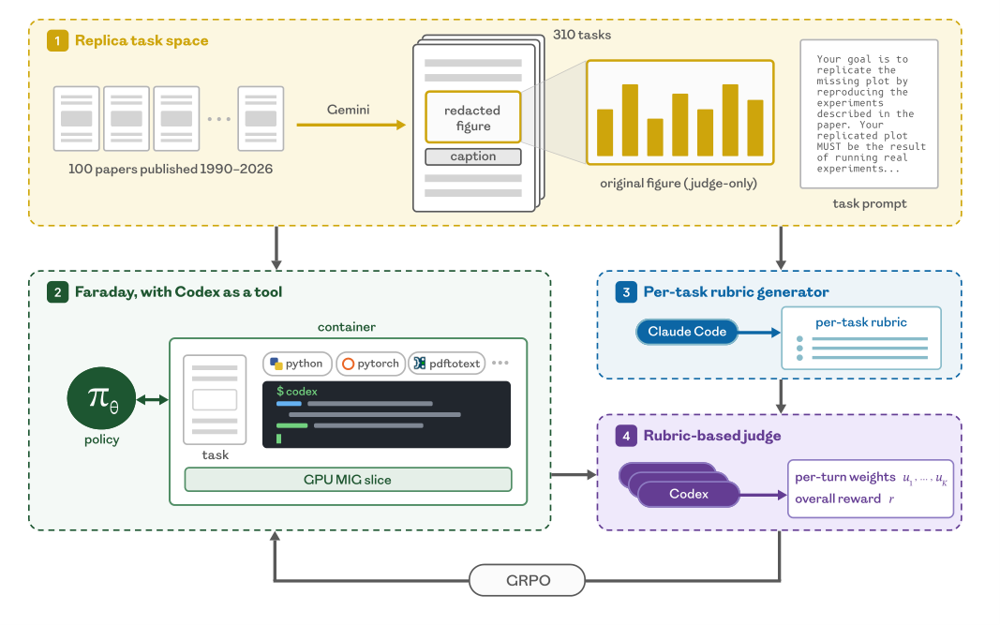

Replica: Training a 27B AI Scientist (Faraday) to Replicate Research via Rubric-Judge RL
TL;DR
- Replica (arXiv 2608.13331; Falck, Sabri, Surina, et al. — Inherent Labs' first paper, per the author thread) turns paper replication into a scalable RL task space: 310 figure-replication tasks auto-generated from 100 ML and AI-for-science papers (1990–2026) by having Gemini 2.5 Pro redact one results figure per task; the agent must recreate the figure by actually running the experiment, without ever seeing the original plot.
- Faraday, a Qwen3.6-27B agent post-trained on the 242-task train split with a turn-level-credit variant of GRPO, calls a frontier coding agent (Codex) as a tool. It beats Claude Opus 4.8 on 73% of in-distribution ML tasks and 60% of held-out AI-for-science tasks, averaging +6% over Claude and +8% over Codex on the test split by the rubric judge.
- The reward is an auto-generated per-task rubric judge (rubrics written by Claude Opus 4.7 from a meta-rubric; judging by a Codex-based coding agent with full container access). Averaging three judge samples plus judge-produced turn-level credit weights is what keeps long-horizon, non-verifiable GRPO from collapsing — the uniform-credit ablation destabilizes within ~50 steps.
Why this matters
This is the most direct attack I've tracked on the question behind half of this tracker: can long-horizon research capability be trained into weights rather than engineered into harnesses? The authors' explicit thesis is that it can — the paper closes by framing the result as "a stepping stone towards AI agents capable of long-horizon scientific innovation without requiring complex harnesses." Three things make it more than a demo. First, the task space is manufactured at scale from existing literature: every figure in every paper is a potential task with a natural ground truth, which sidesteps the usual bottleneck of hand-built RL environments (the same bottleneck the GLM-5.3 environment-generation pipeline and SKT-style task synthesis attack from the other side). Second, the division of labor is the interesting one: a small model is trained to have research taste — deciding what to implement, how to scale down, whether a result is believable — while execution is outsourced to whatever frontier coding agent is available. Third, it's an existence proof that GRPO can be made stable on multi-hour, non-verifiable tasks, a regime the paper openly acknowledges is "known to suffer from instability," using nothing more exotic than judge-sample averaging and turn-level credit.

Figure 1 from the paper: (1) curate 100 papers and redact individual results figures with Gemini 2.5 Pro to mint tasks; (2) roll out Faraday in a container with the redacted PDF, a Codex binary, and a 1/7 MIG slice of an H200; (3) generate a task-specific rubric with Claude Opus 4.7 from a meta-rubric; (4) judge each rollout with a Codex-based agent that has access to the full container, producing the reward and per-turn credit weights for GRPO.The core idea
Replication is chosen precisely because it sits between verifiable and open-ended. Recreating a redacted figure demands the same hypothesis-driven exploration as research — papers under-specify details, so the agent must fill gaps, choose faithful scale-downs for a 60-minute single-GPU budget, and validate its own intermediate results — yet the original figure provides a "gold plot" that makes judging grounded in a way that peer-review-style judging of novel research is not. The authors are explicit about this contrast with AI-Scientist-style end-to-end paper generation: those judges "mirror peer review, a highly underspecified setting with minimal ground truth and considerable noise," whereas replication judging can be validated against human assessment.
The second idea is the coding agent as a tool (CAT) paradigm. Faraday is not a scaffolded pipeline of role-specialized agents — the paper argues such modular architectures are "brittle and reductive." It is a single 27B policy in a container whose most powerful affordance is the Codex CLI binary; a wrapper script enforces a per-request deadline (configurable by Faraday), returning partial transcripts on timeout. The policy learns orchestration and taste; the tool supplies execution. Notably, the coding agent model is a runtime parameter: GPT-5.4 mini for most of training, GPT-5.5 for the final stage and evaluation.
How it works
Task space. 100 ML and AI-for-science papers (1990–2026) yield 310 figure-replication tasks — one per redacted results figure. The train split is 242 ML tasks; held-out AI-for-science tasks form the test split (the thread counts 68 — consistent with 310 − 242). Each container gets the task prompt, the redacted paper PDF, research libraries, internet access, the Codex binary, and a one-seventh MIG slice of an H200; every agent (Faraday and baselines) gets the same 60-minute single-GPU budget. Task sampling visits every task exactly once per epoch, balanced across the corpus year range so no era of science dominates an update.
Reward. For each task, Claude Opus 4.7 is prompted with a meta-rubric to write a task-specific grading rubric. A Codex-based judge — itself a coding agent with access to the rollout's container, including the generated figure, the replication codebase, the full agent transcript, and the gold plot — scores the rollout against that rubric. At train time the rollout-level reward averages three independent judge samples:
where \(\tau_i\) is rollout \(i\)'s trajectory and \(R_{\text{judge}}^{(j)}\) is one judge sample (reconstructed notation — the paper states the mean-of-three procedure in prose).
Turn-level credit. The judge also emits a weight distribution \(u_k\) over turns \(k\), normalized so the overall reward scale is untouched:
where \(n_k\) is the number of tokens in turn \(k\). Weights are averaged turn-wise over the three judge draws (which preserves the normalization), and the turn's weight then scales the per-token advantage inside GRPO — redistributing credit within a rollout without changing the magnitude of the update. Schematically, for token \(t\) in turn \(k(t)\) of rollout \(i\):
(reconstructed from the paper's prose description of scaling the GRPO per-token advantage by the turn weight; \(G\) is the GRPO group size).
Core loop, in pseudocode:
# Replica task generation
for paper in curate_papers(n=100, years=1990..2026):
for figure in results_figures(paper):
task = redact(paper, figure) # Gemini 2.5 Pro
rubric[task] = opus_4_7(meta_rubric, task)
# Faraday training (turn-level-credit GRPO)
for epoch: for task in balanced_shuffle(train_split): # 242 ML tasks
G rollouts: container(task_pdf_redacted, codex_binary,
1/7 H200, 60-min budget)
trajectory τ_i = policy π_θ acts; may call Codex-as-tool
for each rollout i:
r_i = mean of 3 codex_judge(τ_i, rubric[task], container_i)
u_k = judge turn weights, normalized: Σ u_k·n_k = Σ n_k
A_i = group-normalize(r_1..r_G)
per-token advantage in turn k ← u_k · A_i
GRPO update on π_θ # Qwen3.6-27B
Judge validation. On tasks selected to maximize rubric-vs-baseline-judge disagreement, expert humans ranked the same rollouts. By Kendall τ, two draws of the rubric judge agree at 0.66 (baseline judge: 0.46; two humans with each other: only 0.30), and the rubric judge agrees with humans at 0.19 vs the baseline's 0.15. They also quantify judge noise directly: sampling 16 GRPO groups of 8 rollouts from training steps 430–461 and scoring each rollout eight times per judge, they measure the fraction of within-group score variance attributable to judge noise as a function of the number of judge samples averaged.
Results
- Head-to-head: with eight rollouts per task per agent and per-task mean scores, Faraday beats Claude Opus 4.8 and GPT-5.5 (Codex) on 73% of in-distribution ML tasks and 60% of held-out AI-for-science tasks; on the test split it averages +6% over Claude and +8% over Codex. The thread quotes test-split means of 0.791 (Faraday) vs 0.748 (Claude) and 0.729 (Codex) (from the thread — verify in the paper). Baselines are not sandbagged: reasoning effort is set to extra-high, GLM-5.2 runs in the Claude Code harness (its best reported harness), and all agents get identical materials and budget. Prompt-optimizing Codex only marginally closes the gap.
- The benchmark has headroom: frontier agents don't saturate Replica. More recent papers are harder (the authors speculate: thinner pre-training coverage plus harder scale-down decisions), NLP/LLM papers are hardest by topic, and per-topic difficulty rankings are consistent across baselines — with Faraday leading on every topic.
- Generalization: on eight held-out full-scale replications (no scale-down), Faraday still beats Claude. A checkpoint trained entirely with GPT-5.4 mini as the tool improves when GPT-5.5 is swapped in at eval — taste transfers across execution engines without retraining. It also generalizes to "innovation" task variants built from test-split papers, where the target figure asserts something different from the original.
- Stability ablation: removing turn-level credit from a late checkpoint collapses training within ~50 steps — carry-forward mean reward falls, token entropy spikes then collapses.
- Qualitative (Table 1): on the tasks with the largest Faraday-vs-frontier margins, human inspection finds Faraday implements the mechanism behind the claim rather than hard-coding outputs, scales down faithfully to the paper's experimental scope, and avoids shortcuts that would flatter its own result.
How it connects
- TEMPO (dots3-note) — added the same day: the same long-horizon credit-assignment problem, solved differently. TEMPO makes the policy itself a generative critic at macro-step boundaries; Replica outsources credit to a tool-using judge with container access. Both are answers to "final rewards are too sparse for tens-of-hours rollouts."
- TRACE: Turn-Level Rewards — Replica's judge-emitted, normalization-preserving turn weights are a cleaner-than-usual instance of the turn-level credit machinery that tutorial covers.
- RLSVR: Self-Verifiable Rewards — the structural alternative: RLSVR transforms tasks so rewards verify themselves; Replica keeps a judge but grounds it with a gold artifact and per-task rubrics. Replication is the rare open-ended domain where a gold artifact exists.
- Rubric Dropout and Wiggle — the failure modes lurking here. Rubric-based judges reward-hack (Rubric Dropout's motivation), and judge verdicts flip under pressure (Wiggle). Replica's defenses — task-specific rubrics, multi-sample averaging, container-grounded judging — are plausible mitigations but were validated against ranking agreement, not adversarial pressure.
- Training Agents Inside Their Harnesses and Recursive Harness Self-Improvement — the two poles this paper positions itself between: train the model in situ vs evolve the scaffold. Replica bets on weights over scaffolds, and its CAT setup deliberately keeps the harness minimal ("simple harness" is a section title).
Critical take
The judge-human Kendall τ of 0.19 deserves more attention than the paper's framing gives it — it's measured on adversarially selected maximum-disagreement tasks, but "agrees with humans barely better than the baseline (0.15)" on hard cases is thin support for "agrees with human assessment" in the abstract. The stronger claim is really low noise (0.66 self-agreement), and low-noise-but-biased judges are exactly the ones RL exploits; the qualitative analysis mitigates but doesn't close this. Second, both the judge and the tool are Codex-family models, and training used GPT-5.4 mini as the executor — some of Faraday's edge over Claude could be distribution-matching to OpenAI-flavored execution and judging rather than pure taste (the GPT-5.5-swap experiment shows transfer across sizes, not across families). Third, the 60-minute/single-MIG-slice budget makes "replication" here a scale-down-and-be-faithful exercise; the eight full-scale tasks are encouraging but a small sample. None of this undercuts the main achievement: a manufactured, graded, non-saturated task space plus a stable recipe for long-horizon non-verifiable GRPO is infrastructure the whole field can reuse.
If you remember three things
- Every figure in the literature is a potential RL task: redact it, rubric it, and you have 310 graded long-horizon research tasks — a task-space recipe that scales with the literature itself.
- The stability recipe for non-verifiable long-horizon GRPO: per-task rubrics, mean-of-three judge samples, and judge-emitted turn weights normalized as \(\sum_k u_k n_k = \sum_k n_k\) to redistribute credit without changing update magnitude — remove the last piece and training collapses in ~50 steps.
- Train taste, rent execution: a 27B policy deciding what to do while calling frontier coding agents beats those same frontier agents working alone — and the executor can be upgraded at inference without retraining.